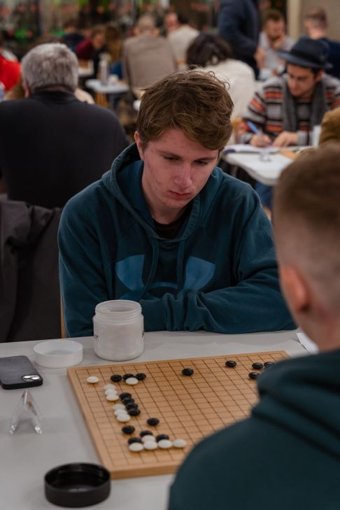
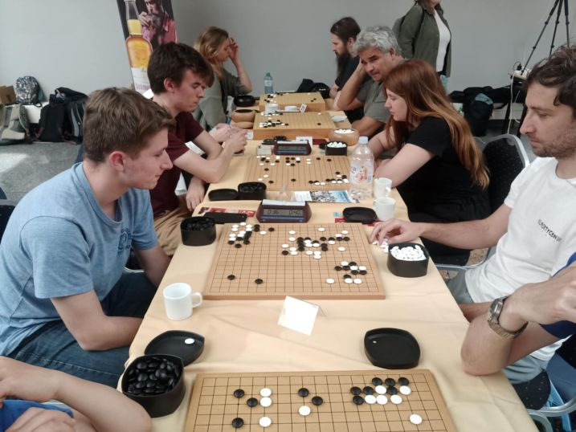
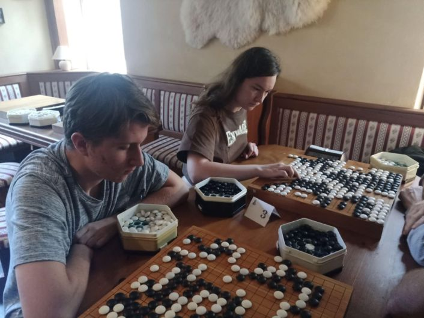

"Ak šach je hra kráľov, tak Go je hra cisárov"
Ide o strategickú ázijskú doskovú hru. Jej pravidlá sú veľmi jednoduché, ale aj napriek tomu dokáže byť veľmi komplikovanou. Na Slovensku máme hráčsku základňu s kúsok viac ako 100 aktívnymi členmi, a pre nich sa organizujú mnohé turnaje, či už na Slovensku, alebo aj v zahraničí.
Zaujímavosťou je, že prvý európsky profesionálny hráč Go pochádza zo Slovenska.
Užitočné odkazy
- Interaktívne pravidlá
- Slovenská Asociácia Go
- Európska Go Federácia
- Európska Go Databáza
- Rating slovákov
- Môj rating


